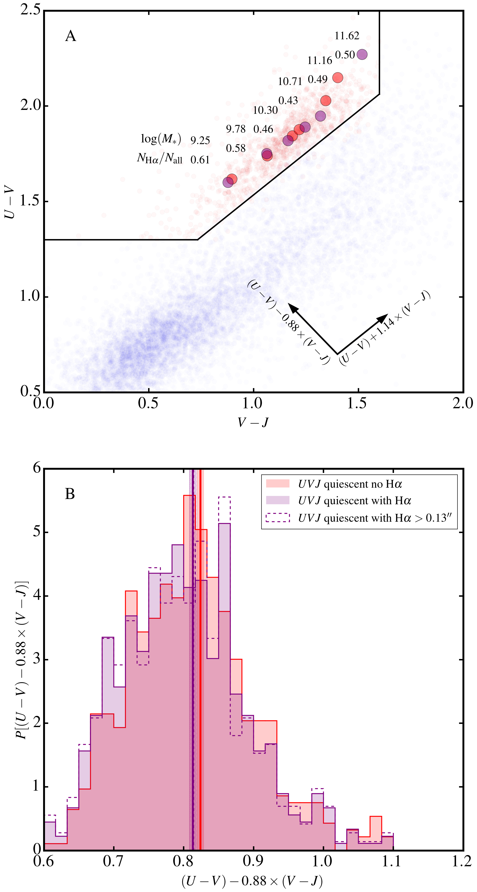

UVJ Quiescent Galaxies with Hα emission
Figure 1:
The location of our mass and redshift selected galaxies in the UVJ diagram. Quiescent
systems are shown as red points and star-forming systems are shown as blue
points. Objects with Hα detections are identified with purple crosses. The box
outlined by the grey dashed line identifies the region in color-color space used to
fit for the UVJ dividing line: for each 3D-HST field, and for each redshift bin
(0.7≤z≤1 or 1<z≤1.5), the minimum of the
Figure 2:
The location of our sample in the star formation rate-stellar mass plane. Colored
points plot our sample of quiescent galaxies with Hα emission from the 3D-HST
catalogs, with circular points corresponding to objects with spatially resolved Hα
emission and triangular points corresponding to objects with spatially unresolved Hα
emission. The color of each point corresponds to the UV+IR star formation rate of the
object. Arrows indicate upper limits of the Hα-based SFRs, again with the color
indicating the UV+IR SFR. Black contours identify the main sequence of UVJ
Figure 3:
The fraction of UVJ quiescent objects on or above the main sequence (SFR≥SFRMain Sequence-1σ) as a function of stellar mass. Here, our sample is split into two redshift bins 0.7≤z≤1.0 and 1.0<z≤1.5; blue lines correspond to objects in the lower redshift bin and green lines correspond to objects in the higher redshift bin. Shaded regions correspond to 1σ confidence intervals. Solid lines with solid shaded regions are determined from Hα-based SFRs, whereas dashed lines and hatched regions are determined using UV+IR SFR. As in Figure 2, we are likely missing some low-level, extincted star formation from low mass objects, meaning points below 109.7M⊙ (109.2M⊙) are lower limits for z>1 (z≤) sample.
Figure 4:

Figure 5:
Figure 6:
Structural properties of quiescent galaxies in the 3D-HST survey. Shown in the top panel is the distribution of the stellar density within the central 1 kpc (Σ1). The distribution of quiescent objects with Hα emission is discrepant with the distribution of objects with no detected Hα emission (a KS test finds a p value of 6×10-5). The bottom panel illustrates the location of quiescent and star-forming systems in the Σ1-n plane. Blue and red contours show the location of UVJ star-forming and quiescent objects respectively and points correspond to objects with spatially resolved Hα emission (circles) and unresolved Hα emission (triangles). Color coding corresponds to the position of the object along the red sequence as measured by (U-V)+1.14(V-J), with lighter colors further along on the red sequence. Quiescent objects with Hα appear to be transitioning from a disk-dominated structure to a buldge-dominated structure as they move along the red sequence before they become completely quenched and elliptical.
Figure 7:
The dust content of UVJ selected systems, as probed by their infrared excess (IRX=LIR/L1600). All objects shown have a secure 24 μm detection. Although the dust content of high mass objects is consistent between quiescent and star-forming galaxies, below ~1010.25, quiescent objects have higher levels of dust extinction than typical star-forming galaxies. This suggests that some low-mass objects have moved into this space due to very blue intrinsic colors and high levels of extinction.
Figure 8:
Dust-corrected U-V and V-J colors for the quiescent object in the 3D-HST sample. Extinction is either calculated from the infrared excess (for objects with 24μm detections), or the best-fitting SED (for objects with no 24μm detection). Large points correspond to the median position of objects in this space for different mass bins, with the size of the point correlated with the mass of the bin. The median position of the entire sample is shown as the large red points, the median position of the quiescent objects with Hα emission is shown as the purple points. Blue and yellow points correspond to the subsamples with 24μm detections and both 24μm and Hα detections respectively. There appears to be population of low-mass objects with blue dust-corrected colors that is extincted into UVJ quiescent space.